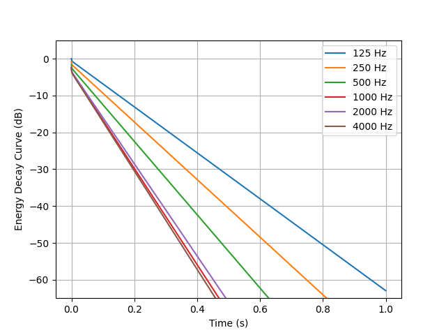

Note
Go to the end to download the full example code.
The Finite Difference Method
Simulate the energy decay in a cuboid room using the Finite difference diffusion equation.
As per text below, the inputs need to be prepared. For that, follow the instructions in Finite Different Method Use Documentation — Inputs.
import os
import json
import numpy as np
import matplotlib.pyplot as plt
from acousticDE.FiniteDifferenceMethod.FDM import run_fdm_sim
import tempfile
Use a temporary directory for the example
temp_dir = tempfile.TemporaryDirectory()
# You can replace the temporary directory with a specific path if desired
script_dir = temp_dir.name
General input variables
input_data = {
"room_dim": [3.0, 3.0, 3.0],
"coord_source": [1.5, 1.5, 1.5], #source coordinates x,y,z
"coord_rec": [2.0, 1.5, 1.5], #rec coordinates x,y,z
"alpha_1": [0.10, 0.15, 0.20, 0.25, 0.25, 0.30], #Absorption coefficient for Surface1 - Floor
"alpha_2": [0.07, 0.10, 0.13, 0.15, 0.15, 0.16], #Absorption coefficient for Surface2 - Ceiling
"alpha_3": [0.08, 0.09, 0.11, 0.15, 0.14, 0.14], #Absorption coefficient for Surface3 - Wall Front
"alpha_4": [0.08, 0.09, 0.11, 0.15, 0.14, 0.14], #Absorption coefficient for Surface4 - Wall Back
"alpha_5": [0.08, 0.09, 0.11, 0.15, 0.14, 0.14], #Absorption coefficient for Surface5 - Wall Left
"alpha_6": [0.08, 0.09, 0.11, 0.15, 0.14, 0.14], #Absorption coefficient for Surface6 - Wall Right
"fc_low": 125, #lowest frequency
"fc_high": 4000, #highest frequency
"num_octave": 1, # 1 or 3 depending on how many octave you want
"dx": 0.5,
"dt": 1/8000, #time discretization
"m_atm": 0, #air absorption coefficient [1/m]
"th": 3, #int(input("Enter type Absortion conditions (option 1,2,3):")) # options Sabine (th=1), Eyring (th=2) and modified by Xiang (th=3)
"tcalc": "decay" #Choose "decay" if the objective is to calculate the energy decay of the room with all its energetic parameters; Choose "stationarysource" if the aim is to understand the behaviour of a room subject to a stationary source
}
Creation of json
fname_input_configuration = "cube_input_fdm.json"
with open(os.path.join(script_dir, fname_input_configuration), "w") as f:
json.dump(input_data, f, indent=4)
print("Input file successfully created: cube_input_fdm.json")
Input file successfully created: cube_input_fdm.json
Run simulation
result = run_fdm_sim(os.path.join(script_dir, fname_input_configuration))
print("Reverberation time T30 band values:", result["t30_band"])
print("Early decay time EDT band values:", result["edt_band"])
print("Clarity C80 band values:", result["c80_band"])
print("Definition D50 band values:", result["d50_band"])
print("Centre time Ts band values:", result["ts_band"])
<class '_io.TextIOWrapper'>
1% done
2% done
3% done
4% done
5% done
6% done
7% done
8% done
9% done
10% done
11% done
12% done
13% done
14% done
15% done
16% done
17% done
18% done
19% done
20% done
21% done
22% done
23% done
24% done
25% done
26% done
27% done
28% done
29% done
30% done
31% done
32% done
33% done
34% done
35% done
36% done
37% done
38% done
39% done
40% done
41% done
42% done
43% done
44% done
45% done
46% done
47% done
48% done
49% done
50% done
51% done
52% done
53% done
54% done
55% done
56% done
57% done
58% done
59% done
60% done
61% done
62% done
63% done
64% done
65% done
66% done
67% done
68% done
69% done
70% done
71% done
72% done
73% done
74% done
75% done
76% done
77% done
78% done
79% done
80% done
81% done
82% done
83% done
84% done
85% done
86% done
87% done
88% done
89% done
90% done
91% done
92% done
93% done
94% done
95% done
96% done
97% done
98% done
99% done
100% done
Post-processing calculations...
Simulation finished successfully! Results in resultsFDM.pkl file
Reverberation time T30 band values: [0.96239727 0.76779903 0.60284259 0.45902749 0.47890634 0.44870691]
Early decay time EDT band values: [0.96071194 0.76567151 0.60011633 0.45479659 0.47545658 0.44438318]
Clarity C80 band values: [ 3.32608732 5.0712991 7.1997136 10.04015696 9.56089758 10.30365141]
Definition D50 band values: [51.20265533 59.31685493 68.1926099 77.78489939 76.35324653 78.54053339]
Centre time Ts band values: [69.73893271 55.63761091 43.68424592 33.26286157 34.70335812 32.51499329]
Plotting Energy decay curve
times = result['t'][:len(result['t'])//2]
energy_decay_curve = np.array(result['w_rec_off_band'])
plt.plot(
times,
10*np.log10(np.abs(energy_decay_curve.T/np.max(energy_decay_curve))),
label=[f'{int(fc)} Hz' for fc in result['center_freq']])
plt.grid(True)
plt.ylim([-65, 5])
plt.ylabel('Energy Decay Curve (dB)')
plt.xlabel('Time (s)')
plt.legend()

<matplotlib.legend.Legend object at 0x7f3db8a5bfd0>
temp_dir.cleanup()
Total running time of the script: (0 minutes 16.379 seconds)